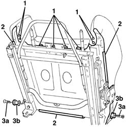
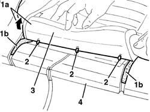

7045D24 Front seat CUSHION ASSEMBLY COVER (one), left or right - R.R.
- Path
- Procedures > 70 FITTINGS > 7045 FRONT SEATS > 7045D FRONT SEAT COVER/UPHOLSTERY > 7045D24 Front seat CUSHION ASSEMBLY COVER (one), left or right - R.R.
- Kind
- repair procedure (removal / refitting; the operation number is the code)
- Applies to
- engines: 3.2 V6; all production periods
- Interactive page
- https://sloeber94.github.io/elrnDB-a156/en/#/3238900
Applies to: engines: 3.2 V6; all production periods; only with equipment: GTA
 Removing
Removing
 Refitting
Refitting7045A10 l/h or r/h front seat (one) - r+r
7045A44 seat interior guard - r r
7045A18 FRONT SEAT BACKREST ASSEMBLY (ONE), LEFT OR RIGHT - R.R.
7045A85 Front seat BACKREST COVER, left or right - R.R.
1. Open the retainers for the front perimeter of the cushion cover.
2. Release the profiles of the cushion cover side and rear perimeters.
3. Undo the bolts (3a) and remove the backrest attachment pins (3b).

Applies to: engines: 3.2 V6; all production periods; only with equipment: GTA
1. Fold the cushion over and detach the cushion cover (1a) from the velcro (1b).
2. Cut the cover retaining rings using clippers.
3. Remove the cushion cover.
4. If necessary, remove the cushion upholstery after having disconnected the electrical connection for the heater pad.

Applies to: engines: 3.2 V6; all production periods; only with equipment: GTA
Refitting
RemovingCheck that the cushion cover is undamaged.
If removed, position the cushion upholstery and connect the electrical connection for the heater pad.
Place the cushion cover in position.
Fit the cover retaining rings.
Fold the cushion over and attach the cover to the velcro.
Position the backrest attachment pins and tighten the bolts.
Fit the profiles for the cushion cover side and rear perimeters.
Close the cushion cover front perimeter retainers.
7045A85 Front seat BACKREST COVER, left or right - R.R.
7045A18 FRONT SEAT BACKREST ASSEMBLY (ONE), LEFT OR RIGHT - R.R.
Topics linked from this page (5)
- 7045A10 l/h or r/h front seat (one) - r+r
- 7045A18 FRONT SEAT BACKREST ASSEMBLY (ONE), LEFT OR RIGHT - R.R.
- 7045a43 seat exterior guard - r r
- 7045A44 seat interior guard - r r
- 7045A85 Front seat BACKREST COVER, left or right - R.R.